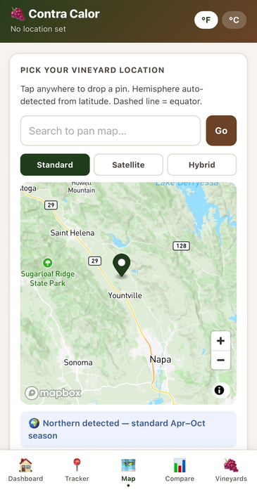
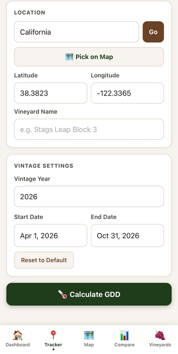
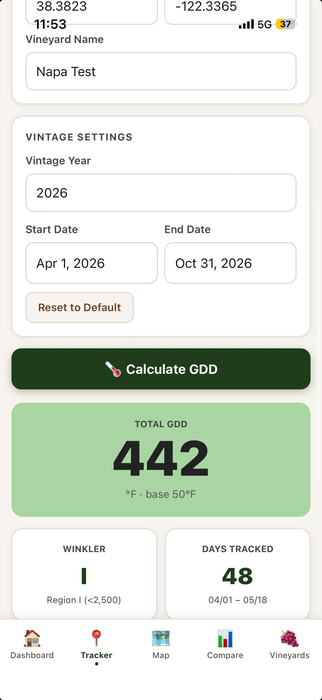
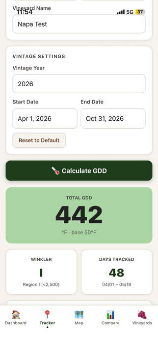
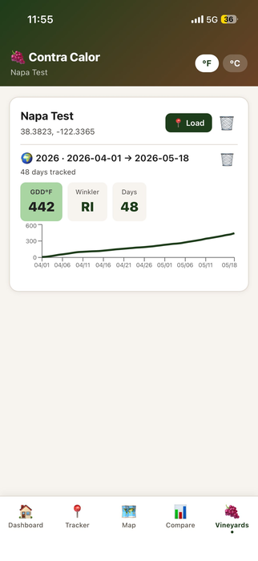

Contra Calor is designed to get out of your way. Here's exactly how to use it.
Open the Map tab and tap anywhere on the map to drop a pin on your vineyard block. Search by city or address to pan the map first. Switch between Standard, Satellite, and Hybrid views to identify your exact location.
The app auto-detects your hemisphere from the latitude and confirms it with a blue banner below the map.

After confirming your location, head to the Tracker tab. Enter your vineyard name — block name, estate name, whatever you call it. Then select your vintage year and adjust the date range if needed.
Dates default to April 1 – October 31 for Northern Hemisphere. The Vineyard Name field is required before calculating.

Tap Calculate GDD. Within seconds you'll see your total GDD accumulation, Winkler region classification, and days tracked — pulled from station-priority weather observations closest to your vineyard.

Scroll down to see the full Winkler Progress bar and accumulation curve chart showing your GDD build-up day by day. When you're ready, tap Save This Vintage to add it to your Vineyard profile.

Open the Vineyards tab to see your saved vineyard with its current GDD, Winkler region, days tracked, and accumulation chart. The current season updates automatically every day — just open the tab and it's always fresh.
Tap Load to instantly set the vineyard coordinates in the Tracker for calculating a new vintage or date range.
